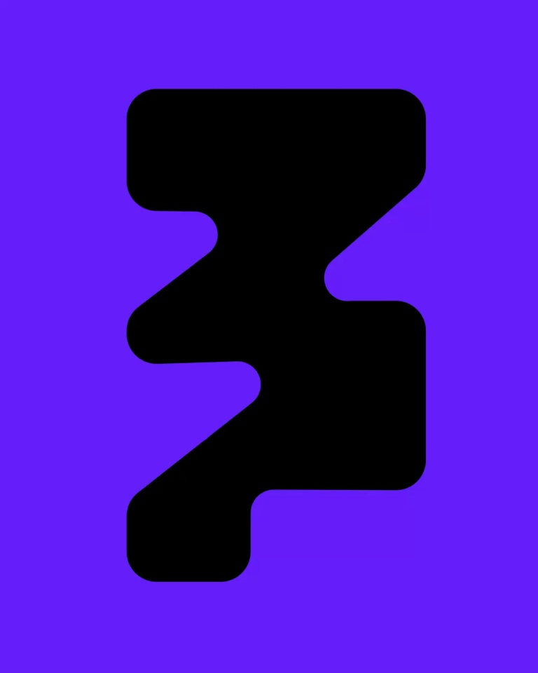
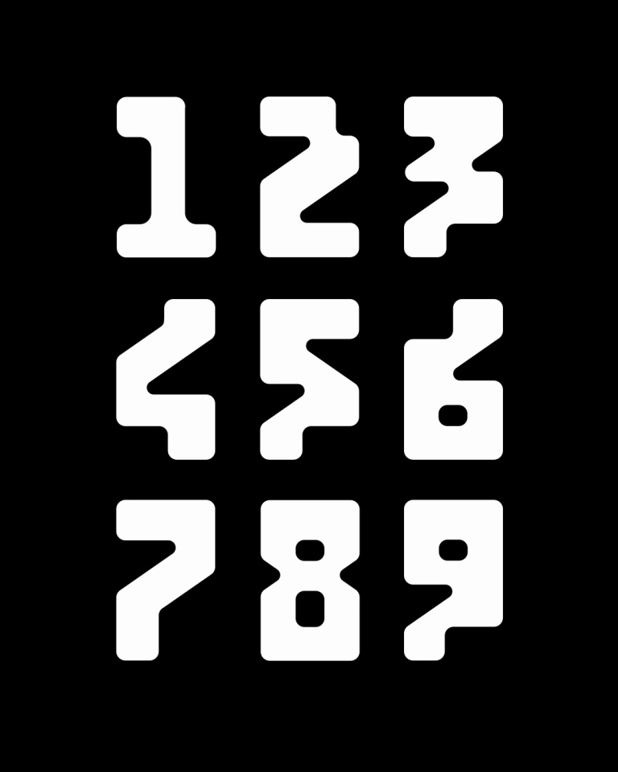

Modyfi / V363
数字动效 · 6.1 秒
先用三个大数字连续倒计时，再拉开成为一套九宫格数字，展示同一家族的折线与圆角。
构图与编排 可播放 · 可替换内容
整体编排规则示例
查看 HTML 源码
<!doctype html><html lang="zh-CN"><meta charset="utf-8"><meta name="viewport" content="width=device-width,initial-scale=1"><title>数字动效 · 6.1 秒 · sequence</title><style>html,body{margin:0;width:100%;height:100%;overflow:hidden;background:#6c1dff}canvas{display:block;width:100%;height:100%;object-fit:contain}</style><body data-mode="sequence"><canvas width="1000" height="600"></canvas><script src="data.js"></script><script src="common.js"></script><script src="scene.js"></script><script src="bridge.js"></script></body></html>画面元素倒计时数字色彩底板九宫格数字
MOTION LANGUAGE
动作与构图
局部动作 · 构图规则
01
倒计时同时换字与底色
倒计时同时换字与底色规则示例
查看 HTML 源码
<!doctype html><html lang="zh-CN"><meta charset="utf-8"><meta name="viewport" content="width=device-width,initial-scale=1"><title>数字动效 · 6.1 秒 · sequence</title><style>html,body{margin:0;width:100%;height:100%;overflow:hidden;background:#6c1dff}canvas{display:block;width:100%;height:100%;object-fit:contain}</style><body data-mode="clip" data-start="0" data-end="2.2"><canvas width="1000" height="600"></canvas><script src="data.js"></script><script src="common.js"></script><script src="scene.js"></script><script src="bridge.js"></script></body></html>3、2、1 分别使用紫、荧光黄、玫红底，黑色大数字占据中央。字符变化短促，停顿清晰，字形转折可以轻微折叠但不削弱数字辨认。
02
从单字变成数字家族
倒计时结束切黑底，白色数字按从左到右、从上到下补齐。格子中心不移动，内部轮廓逐步转成最终数字；最后放大 3 回到开头形成循环。
03
扩展字库保留同一转折逻辑
替换为章节编号或计数时，保持统一笔画宽、圆角和斜切角。网格最多九项，新字不挤占相邻格。
SEQUENCE
段落与节奏
点击段落，定位到上方编排示意。


画面参考 · 离散静帧
KEEP THE RELATIONSHIPS
制作其他主题
- 替换倒计时和字库；保留单字→系列→回环。
制作约束
倒计时数字 / 色彩底板 / 九宫格数字
- 3、2、1 分别使用紫、荧光黄、玫红底，黑色大数字占据中央。字符变化短促，停顿清晰，字形转折可以轻微折叠但不削弱数字辨认。
- 倒计时结束切黑底，白色数字按从左到右、从上到下补齐。格子中心不移动，内部轮廓逐步转成最终数字；最后放大 3 回到开头形成循环。
- 替换为章节编号或计数时，保持统一笔画宽、圆角和斜切角。网格最多九项，新字不挤占相邻格。